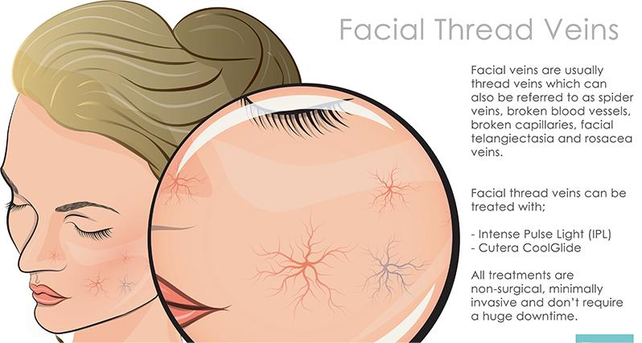
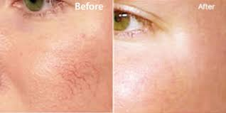
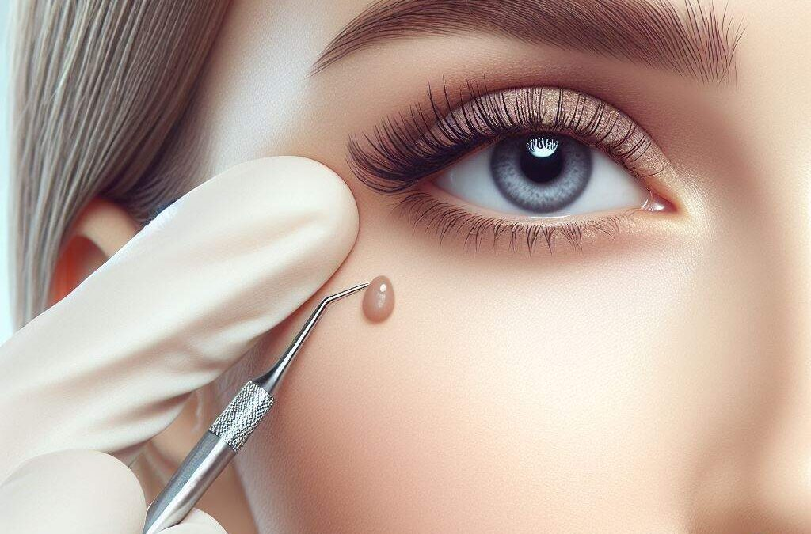
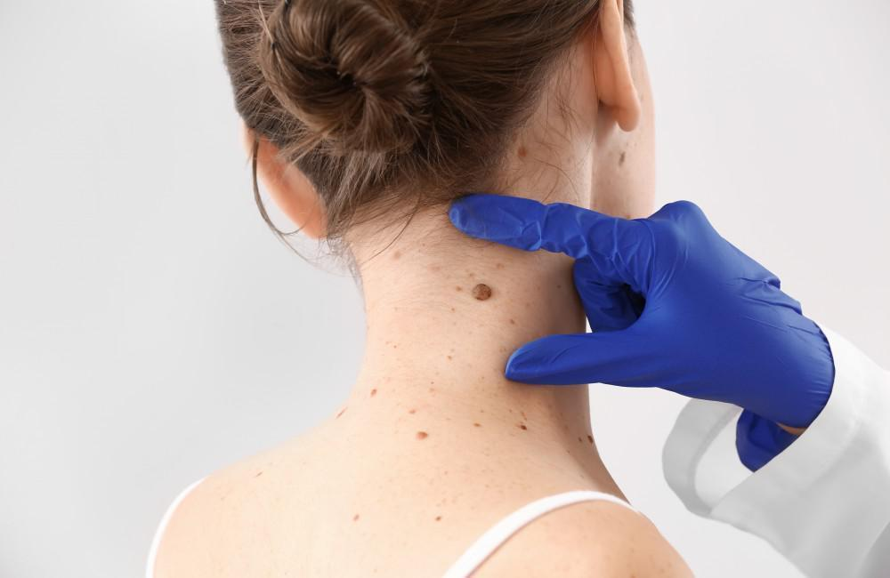
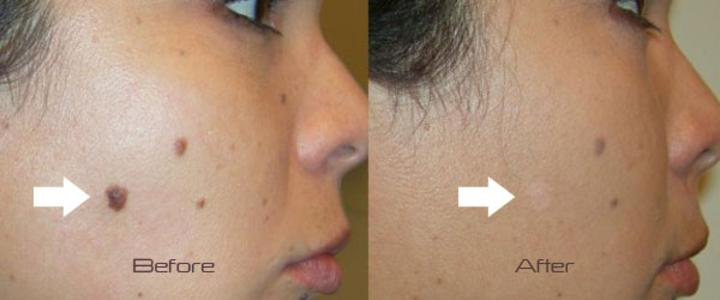

Medically called ‘telangiectasia’, thread veins on the legs are very small blood vessels within the living layer of the skin (the dermis) that have become dilated and visible. Very smalls ones are red – as they get bigger, the colours change through purple to red and then green.
Contrary to popular belief, the condition can strike at any age. As with the majority of medical conditions, thread veins are more common the older one gets, but that doesn’t stop young people from getting them if their genes determine they will.
While there may be variations in the process, depending on the chosen treatment method, the overall approach to thread vein removal remains similar in most cases. Before committing to any method, you should consult with a skilled professional to assess your skin and determine the most appropriate treatment for your vein concerns. Once the treatment process begins, you can expect the following steps:




Skin tags are common, benign skin growths that hang from the surface of the skin on a thin piece of tissue called a stalk. They are made up of many components, including fat, collagen fibers, and sometimes nerve cells and small blood vessels. It’s possible that these collagen fibers and blood vessels become wrapped up inside a layer of skin, leading to the formation of a skin tag. The medical term for a skin tag is acrochordon, and they can also be referred to as soft fibromas or fibroepithelial polyps.
Skin tags are frequently found in areas of friction on the skin, such as the neck, underarms, under the breasts, eyelids, and other skin folds. They start as small, often flesh-colored bumps. They may stay that size and go largely unnoticed, enlarge and continue to be painless, or enlarge and become irritated due to friction or pressure.
